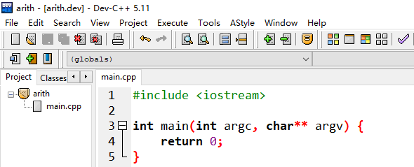

任何一个程序从开始有想法，到程序实现完成，大概都要经历如下几个阶段：
以上过程，如果你有程序设计经验，OK没问题。 对于新手来说，在有了需求和分析的基础上，在有了上述实现程序过程的认知的情况下， 可以尝试由里到外，由小到大的编码过程。 也就是先找到核心问题，实现它，然后完善它。
E:\NOI\WEDO
└─game
└─arith
在arith文件夹内创建项目arith

#include <iostream>
using namespace std;
char opt='+'; //运算符
long long x; //操作数1，被加数或被减数
long long y; //操作数2，加数或减数
long long ans; //由你提供的回答
long long result; //正确答案
int main(int argc, char** argv) {
cout << "please int x + y or x - y then input answer,";
cout << "between operator is blank." << endl;
cin >> x >> opt >> y;
switch(opt){
case '+':
result = x + y;
break;
case '-':
result = x - y;
break;
}
cin >> ans;
if(ans==result)
cout << "Right!" << endl;
else
cout << "Error!" << endl;
return 0;
}
按F11执行
please int x + y or x - y then input answer,between operator is blank.
123 + 321
444
Right!
自己想题太难了！！！让计算机帮忙随机出题怎样？
#include <iostream>
#include <cstdlib>
#include <ctime>
using namespace std;
char opt='+'; //运算符
int num=10; //出题数
long long x; //操作数1，被加数或被减数
long long y; //操作数2，加数或减数
long long ans; //由你提供的回答
long long result; //正确答案
int main(int argc, char** argv) {
srand((unsigned)time(NULL)); //设定随机数生成方式
for(int i=0;i<num;i++){ //让计算机出num道题
x = (long long)rand();
y = (long long)rand();
switch(opt){
case '+':
result = x + y;
break;
case '-':
result = x - y;
break;
}
cout << x << opt << y << "=" ; //显示问题横式
cin >> ans;
if(ans==result)
cout << "Right!" << endl;
else
cout << "Error!" << endl;
}
return 0;
}
按F11执行：
13452+5616=19086
Error!
13351+30155=43506
Right!
29107+14963=44
Error!
28158+8300=44
Error!
32420+11621=44
Error!
1812+16807=44
Error!
3769+30221=44
Error!
17826+12964=44
Error!
21264+2914=44
Error!
26072+7071=44
Error!